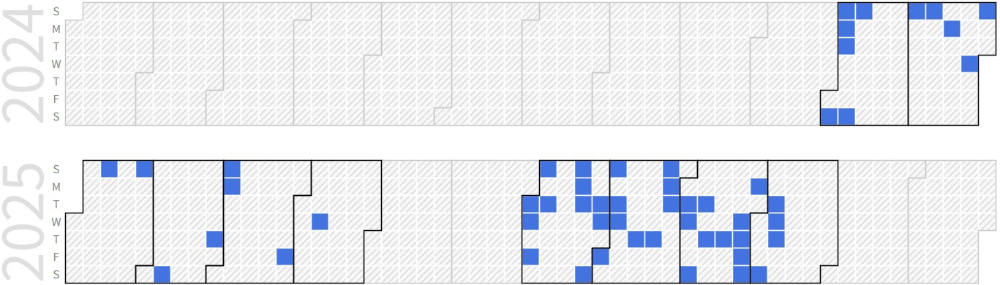

Janghun Lee (Combined Graduate Student)
Graduate Student (M.S), Embedded System-on-Chip Integrator |
Repository Commit History
|  |
Introduction
Full Bio Sketch
Mr. Lee is currently pursuing his undergraduate degree in Electronics Engineering at Kyungpook National University, Daegu, Republic of Korea. His research interests focus on efficient, reliable, runtime, and partial Over-the-Air (OTA) update technologies, encompassing both Software OTA (SOTA) and Firmware OTA (FOTA). In SOTA, he explores various approaches such as leveraging the characteristics of virtual memory in operating systems and utilizing dynamic libraries, while in FOTA, his work centers on developing methods to update firmware stored in flash memory more flexibly and to overcome hardware constraints.
Research Topic
Fire Detection, Notification and Suppression System using YOLOv8
 The currently widely used fire suppression system is the sprinkler. When a fire occurs and the temperature sensor exceeds the threshold, the sprinkler operates. Depending on the environment, this method may take a long time for the sprinkler to operate from the fime the fire occurs. As an alternative to this problem, I propose a fire detection, notification, and suppression system using AI. Using AI, immediate detection, notification and suppression are possible.
The currently widely used fire suppression system is the sprinkler. When a fire occurs and the temperature sensor exceeds the threshold, the sprinkler operates. Depending on the environment, this method may take a long time for the sprinkler to operate from the fime the fire occurs. As an alternative to this problem, I propose a fire detection, notification, and suppression system using AI. Using AI, immediate detection, notification and suppression are possible.
In this study, the following structure was designed. Each edge device continuously obtains one frame of image from the real-time video obtained through the camera. The YOLOv8 model trained to detect fire determines whether a fire has occurred in the captured image. If a fire has occurred, a rectangle is marked on the captured image at the location of the fire. After that, the device number and the corresponding image are transmitted to the central device, CM4 sensing, using RS485 communication. CM4 sensing transmits the received data to the server computer using socket communication, and the server transmits the received data to the mobile phone. The mobile phone generates a notification that a fire has occurred using a dedicated app. When you click the fire suppression button in the app, it will send a command to the edge device to suppress the fire by going back to the path where the fire occurrence data was transmitted. The edge device will spray water at the location of the fire shown in the image. In this study, spraying water is replaced by a laser pointer. This system uses RS485 wired communication, making it noise-resistant and ensuring integrity in communication. Additionally, This system can be expanded by installing additional edge devices.
Over-The-Air update using IrDA Communication in an OS environment
 Recently, many devices use Over-The-Air(OTA) technology to update internal software using wireless communication. The advantage of performing OTA updates using the Internet is that many devices can be updated at the same time. However, OTA updates using the Internet have security vulnerabilities. There is a risk that unauthorized external users can eavesdrop on the contents of the OTA update software or arbitrarily update the software of the device.
Recently, many devices use Over-The-Air(OTA) technology to update internal software using wireless communication. The advantage of performing OTA updates using the Internet is that many devices can be updated at the same time. However, OTA updates using the Internet have security vulnerabilities. There is a risk that unauthorized external users can eavesdrop on the contents of the OTA update software or arbitrarily update the software of the device.
As an alternative to this problem, I propose OTA updates using IrDA (Infrared Data Association) communication. IrDA has fewer security vulnerabilities during data transmission due to the directivity and short-range nature of infrared. It also allows for the creation of highly secure and water proof devices since it does not require a physical connection port.
In this study, OTA using IrDA is performed in an environment where an OS exists. AES is used for confidentiality, and CRC is used for integrity. The host divides the update file into packets of a certain size and transmits them to the target device. The target device checks the CRC and requests the host to retransmit the packet if there is a problem with the packet.
For small programs, it is okay to change the entire program, but for large modularized programs, especially programs that use multiple dynamic libraries, it is possible to update the program by changing only the dynamic libraries that need to be modified. In addition, it is possible to change the dynamic libraries at runtime, so that the program can be updated without stopping.
Dynamic Library based Software Update
 In the case of unstable communication during OTA updates, the update may fail if the connection is lost during the process. For large software, the probability of failure is even higher. In such cases, an intermittent update method is required to receive the update file even under unstable communication conditions. We propose a technique that enables intermittent updates while partially updating the software at runtime using dynamic libraries. The update is performed on a dynamic library basis, where each dynamic library is divided into packets, received at the receiving side, and once all packets are received, the update is executed at runtime. A CRC field is added to each packet to detect erroneous packets. Packets with CRC errors or those not received due to communication issues are stored in the packet manager, and later requested again in a batch to minimize the overhead of control packets.
In the case of unstable communication during OTA updates, the update may fail if the connection is lost during the process. For large software, the probability of failure is even higher. In such cases, an intermittent update method is required to receive the update file even under unstable communication conditions. We propose a technique that enables intermittent updates while partially updating the software at runtime using dynamic libraries. The update is performed on a dynamic library basis, where each dynamic library is divided into packets, received at the receiving side, and once all packets are received, the update is executed at runtime. A CRC field is added to each packet to detect erroneous packets. Packets with CRC errors or those not received due to communication issues are stored in the packet manager, and later requested again in a batch to minimize the overhead of control packets.
Docker based Software Update
 Embedded software requires isolation because there is a risk of conflicts during execution. Virtual machines or LXC are too heavy to provide application-level isolation, whereas Docker can be used to isolate applications. However, when using Docker, updating functions at runtime can be time-consuming. To address this, we separated the Docker image into a base image for application execution and dynamic libraries for the actual functional components. The dynamic libraries are stored in Docker volumes and shared among Docker images that use the same libraries, thereby improving consistency and memory efficiency. When launching a container with the base image, the required dynamic libraries are mounted at runtime, enabling the container to perform the same functions as the original image. Moreover, since the dynamic libraries can be modified at runtime, updates can be carried out more efficiently.
Embedded software requires isolation because there is a risk of conflicts during execution. Virtual machines or LXC are too heavy to provide application-level isolation, whereas Docker can be used to isolate applications. However, when using Docker, updating functions at runtime can be time-consuming. To address this, we separated the Docker image into a base image for application execution and dynamic libraries for the actual functional components. The dynamic libraries are stored in Docker volumes and shared among Docker images that use the same libraries, thereby improving consistency and memory efficiency. When launching a container with the base image, the required dynamic libraries are mounted at runtime, enabling the container to perform the same functions as the original image. Moreover, since the dynamic libraries can be modified at runtime, updates can be carried out more efficiently.
RAM loaded Firmware Update
 Unlike in an operating system environment, an MCU does not use virtual memory, and thus the executable code is fixed in flash memory. Due to this characteristic, various difficulties arise during updates, such as programming flash and rebooting the system. To address this, we propose a method that first applies updates to RAM before programming flash. Leveraging the nature of RAM, this approach allows experimental updates of different functions that can be executed immediately at runtime. Building on this basic concept, we propose a structure that enables the MCU’s functionality to diversify at runtime by selectively updating and executing different functions at a single location. The updated functions are accumulated in a function stack, and through a position-function table, the functions in the function stack are mapped to specific code regions, determining which functionality will be executed.
Unlike in an operating system environment, an MCU does not use virtual memory, and thus the executable code is fixed in flash memory. Due to this characteristic, various difficulties arise during updates, such as programming flash and rebooting the system. To address this, we propose a method that first applies updates to RAM before programming flash. Leveraging the nature of RAM, this approach allows experimental updates of different functions that can be executed immediately at runtime. Building on this basic concept, we propose a structure that enables the MCU’s functionality to diversify at runtime by selectively updating and executing different functions at a single location. The updated functions are accumulated in a function stack, and through a position-function table, the functions in the function stack are mapped to specific code regions, determining which functionality will be executed.
Publications
Journal Publications (SCI 1, KCI 2)
Janghun Lee and Daejin Park. Fast and Intermittent Embedded Software Management based on Dynamic Partial Update Techniques for Intelligent AI-Driven Systems (KCI) Journal of the Korea Institute of Information and Communication Engineering, 29(3):420-431, 2025.
Janghun Lee and Daejin Park. Encrypted SW Segment Construction for Decentralized Runtime Execution over Asymmetric Vehicle Network Architectures (KCI) (Under Revision) IEMEK Journal of Embedded Systems and Applications, 2025.
Janghun Lee and Daejin Park. On Preparation (SCI) Applied Sciences, 2025
Conference Publications (Intl. 3)
Janghun Lee and Daejin Park. Fast Embedded Software Management based on Dynamic Partial Update Techniques via IR for Intelligent AI-Driven Systems (Under Review) In IEEE Conference on Robotic Computing (IRC), 2024.
Janghun Lee and Daejin Park. Docker based Embedded Software Management and Update with Dynamic Library Techniques, IEEE International Conference on Consumer Electronics - Taiwan (ICCE-TW 2025), 2025.
Janghun Lee and Daejin Park. Concurrent Multi-tasking using Metamorphic SW Replacement In IEEE International Conference on Embedded MulticoreManycore Systems-on-Chip (Flagship Conf. MCSoC 2025), 2025.
Participation in International Conference
IEEE IRC 2024, Tokyo, Japan
IEEE ICCE-TW 2025, Kaoisung, Taiwan
IEEE MCSoC 2025, Singapre, Singapore
Last Updated, 2025.12.05